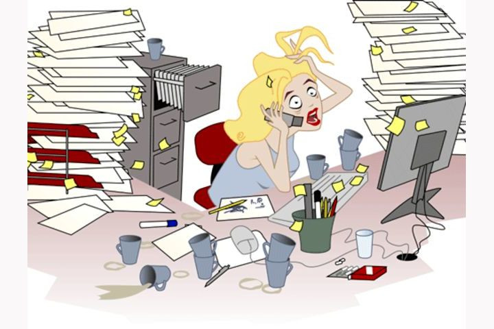

2 способа проверить возврат документов от контрагентов
Итак, представьте, что в конце месяца на вас надвигается налоговая проверка. И вам нужно проверить, все ли документы вернулись от контрагентов и попали в архив?

Способ 1. Простой
Если вы используете электронный архив, это не сложно проверить с помощью встроенного отчета за пару секунд.
Сделать это вы сможете, не вставая с рабочего места и не выгружая никаких документов из "1С". Поможет дополнительный отчет "Состояние документа в "Скан-Архиве".
Вы можете отобрать документы либо по контрагенту, если это сверка, либо по типу документов - и выгрузить только накладные, поступления и реализации. При подготовке к проверке отбор можно сделать по периоду и выбрать временные рамки.
Вы получили это письмо, так как являетесь клиентом компании "ГЭНДАЛЬФ", ранее регистрировались на мероприятие или подписались на рассылку от наших экспертов.